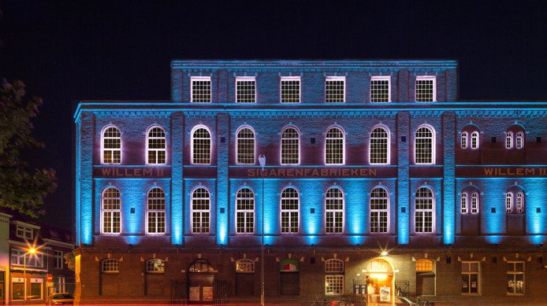
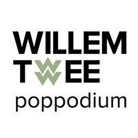
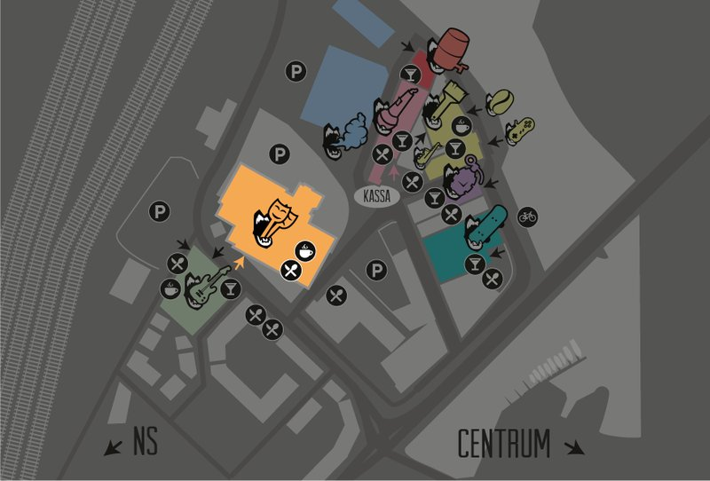
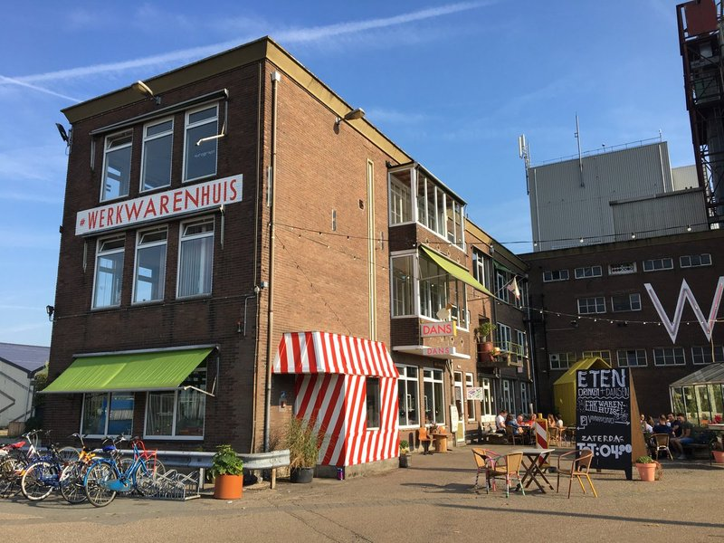
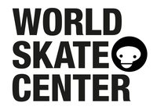
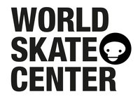
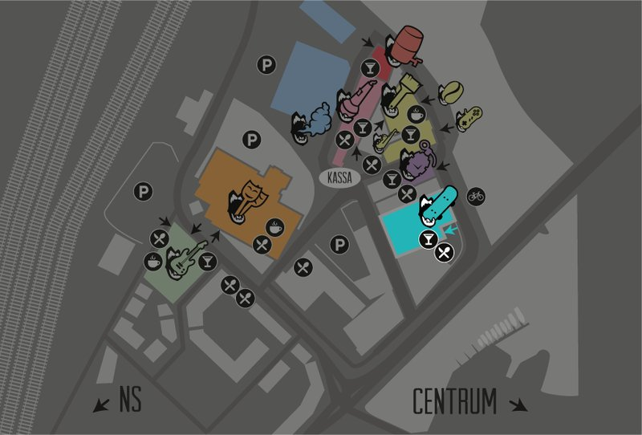
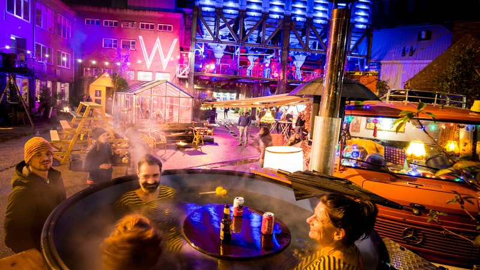

Alle locaties
 Willem Twee
Willem Twee

Grote Zaal Kleine Zaal Spiegelzaal Kunstruimte Kelder
In de Willem Twee fabriek werden vroeger sigaren gemaakt, maar nu beeldende kunst, grafiek, film en muziek!
"Als je naar de Willem Twee fabriek komt ben je de sigaar: de artiesten daar grijpen je direct bij de strot, en laten je niet meer los. Dat werkt nogal verslavend, je wil er niet meer van weg… Pas op dat de rest van het programma niet in rook voor je op gaat!"
Grote Zaal

Willem Twee poppodium heeft twee zalen: een grote en een kleine. In de grote zaal staan door het jaar heen acts in alle genres, grote en kleine. Ook worden er feesten gegeven.

Op vrijdag opent niemand minder dan JOOST het festival. Hij mag dan wel Joost Klein heten, maar hij is eigenlijk te groot voor de Grote Zaal van Willem Twee, die in werkelijkheid best wel klein is. Ben dus op tijd aanwezig! Met het daarop volgende openingsfeest MOSHKAUW knallen we erin met een dik vet Russisch thema vol gekte en dansplezier. Op zaterdag komen ''s middags de jongste rauwkostgangers vanuit heel Brabant afgereisd voor hun favourite rockact Hippe Gasten. In de avond gaan we verder met de meest rauwe en aanstormende indie-acts van de Benelux. We sluiten waardig af met een knaloptreden van de Britse live drum 'n bass sensatie Dr. Meaker, hét succes van RAUWKOST 2017.
Kleine Zaal

Willem Twee poppodium heeft twee zalen: een grote en een kleine. In de kleine zaal is er iedere vrijdag ruimte voor lokale bands bij On The House.

Ook de vrijdag van RAUWKOST staat in het teken van On the House, dit keer in het genre 'indie', geprogrammeerd door rauwdouwer Pascale Paanakker. Op zaterdag kun je er terecht voor de hardere bands.
Spiegelzaal
In de spiegelzaal kruisen onze paden en houden we elkaar een spiegel voor. Laat je verrassen door pop-up gebeurtenissen, een expo, demonstraties en ene open podium.
Kunstruimte
Ook de Kunstruimte op de eerste etage van Willem Twee is geclaimd door twee Rauwdouwers. Zij cureerden daar hun eigen expo genaamd OOGVOER.
Kelder
Dit jaar is de kelder geclaimd door Clittenband. Zij hebben als echte rauwdouwers hun Clit City concept doorgedouwd. Ga dus zeker een kijkje nemen en laat je onderdompelen in hun vunzig poëtische wereld.

Waar dan?

 Verkade
Verkade

Clubzaal Theaterzaal Concertzaal
In de Verkadefabriek werden vroeger koekjes gemaakt, maar nu theater, film, dans en muziek.

“Bij de Verkadefabriek gaat het programma erin als zoete koek. Ze geven je een kijkje in hun keuken, maar ook kun je er zelf aan de slag: kom met je wilde ideeën, dan maken zij er wel chocola van! Tijdens het festival serveren ze lekkers in alle soorten en (for)maten. Maar met alle jonge Bossche talenten die er optreden krijg je vooral een koekje van eigen deeg!"
Clubzaal
Nieuw op RAUWKOST: de meest rauwe jazz in een super sjieke clubzaal met uitstekend geluid. Voor de liefhebbers een must, voor de ontdekkers een aanrader!

Theaterzaal
In de kleine zaal van de Verkadefabriek hebben we muziektheater geprogrammeerd van Club Gewalt.
Concertzaal
In de intieme theaterzaal van de Cabaret Firma kun je zittend op het pluche rustig genieten van de nieuwste lichting kippenvel-artiesten.
Waar dan?

 Van Aken
Van Aken

Restaurant Vide Winkel Pleisterplaats Club W
In dit gedeelte van de voormalige veevoederfabriek De Heus werden vroeger de waren voor veeteelt verpakt, opgeslagen en geëxporteerd. Nu worden er sociale werkplekken gecreëerd voor mensen met een afstand tot de arbeidsmarkt.
“In het Werkwarenhuis wordt er bottum-up gewerkt. Wil je aan de slag met je eigen ideeën? Dan ben je daar aan het juiste adres. Ook zijn er waren te koop van designers, gemaakt in sociale werkplaatsen. In het weekend wordt er gefeest. De open geest regeert: iedereen is welkom in dit roze walhalla!”
Restaurant
Vide
Winkel
Pleisterplaats
Op de zolder van het Werkwarenhuis bouwt Social Label aan hun 'Pleisterplaats de Vrijheid'.
Club W

In Club W bij Van Aken in het werkwarenhuis kan er wekelijks gedanst worden. Tijdens RAUWKOST staat dit roze walhalla in het teken van queer en seksuele identiteit. Huisprogrammeur Iris Rijskamp nodigt de heetste queer feestjes uit het land uit om een hosting te doen.

Waar dan?

 Mengers
Mengers

Barkade Da Silva Jazzwerkplaats
In de mengfabriek van Koudys werden vroeger ingrediënten van veevoeder gemengd. Tegenwoordig mengen ondernemers er hun kennis en innovaties, kunstenaars hun verf en dj’s hun plaatjes.

“In de Mengfabriek wordt gewerkt aan een circulaire toekomst zonder uitstoot en afval. Dans, muziek, kunst en feest maken daar met klem deel van uit. Samenwerken is hier het motto, wat heb jij in te brengen?”
 Barkade
Barkade

Bij Barkade staan de elektronische muziek en gaming centraal. Overdag kun je er spelletjes spelen, maar in de avond verandert deze arcadehal in een Berlijnse nachtclub met live elektronische muziek op synthersizers en zelfgemaakte instrumenten.
Barkade, the new kid in town! Kom langs voor Aziatisch geïnspireerd comfort-food en bieren, cocktails en ander spraakwater ingevlogen uit allerlei hoeken van de planeet, of vermaak jezelf met de arcadekasten, buttonbashers, karaokebooths en meer. Eat, Drink, Play!
Barkade is de ultieme hangout voor diegenen die op zoek zijn naar een alternatieve manier van uitgaan of even terug willen naar die retro gaming vibe van toen. Never grow up!
Da Silva
Da Silva is één van de best bewaarde geheimen van Den Bosch. In de Mengfabriek zit een koffiebranderij met een een tot in de puntjes gedecoreerd huiselijk trendy cafe. Sinds kort kun je er ook bijzonder lekker eten uit de traditionele pure Portugese keuken. Ga gezellig langs voor een koffiebreek of proef de speciale rauwkost daghap.
Jazzwerkplaats
De Jazzwerkplaats vult het gat op tussen de muziekschool en het conservatorium. Onder hun vleugels zijn al legio jonge jazzmuzikanten doorgestroomd naar het conservatorium om vervolgens de Nederlandse jazzpodia te bestormen.

Stichting Jazzwerkplaats Den Bosch zet zich actief in voor de promotie van de Jazz in ‘s-Hertogenbosch. Dit doen ze door middel van het organiseren van diverse activiteiten zoals workshops, concerten en sessies. Ook tijdens RAUWKOST verzorgen ze workshops, sessies en concerten , voor en met jonge Bossche Tijdens RAUWKOST promoten ze de jonge jazzmuzikanten uit de stad en organiseren ze een reünie voor alle oud-leerlingen die de stad al ontvlucht zijn.
Waar dan?

 Brouwers
Brouwers

Bij de Bossche Brouwers aan de Vaart gaat het er niet alleen tijdens RAUWKOST, maar het gehele jaar rauw aan toe. Vier bierfanaten startten een kroeg met een eigen bierbrouwerij, waar wekelijks bandjes kunnen spelen. Zing, mosh, huil, pit, lach, drink en bewonder!
Waar dan?

 Jong Actief
Jong Actief

In het vervallen pand van jongerenorganisatie Stichting Jong Actief waan je je voor even in het underground clubleven van Berlijn. Daar kom je de meest extravagante activiteiten en figuren tegen, of je belandt per ongeluk in een ruimte, waarvan niemand wist dat die bestond...

Stichting Jong Actief is voor en door jongeren opgericht en richt zich op de ontwikkeling van vaardigheden en talenten van jongeren. Het leerproces om zelfredzaam te worden in de samenleving wordt voor een groot deel ondersteund door leeftijdgenoten.
Waar dan?

 Skatehal

Skatehal

Cafépodium Vert Skate eiland
In deze monumentale fabriek werden vroeger scheepsschroeven gegoten van ijzer uit een hete smeltkroes. Tegenwoordig is deze plek een ware smeltkroes van urban arts en sports.

“Voor zij die daar warm van worden, creëren we een smeltkroes van Skaten, boarden, BMX, graffiti, hiphop, punk, garagerock, klimmen en freerunnen. Om af te koelen kun je er ook terecht voor de coolste indie bands”
Cafépodium
Op het podium van het café van het World Skate Center spugen de meest aanstormende rappers uit Nederland hun teksten in verschillende cyphers.

Vert
Hoe vet! Een kei harde punkband midden in de hoogste skate ramp van Europa, terwijl de skaters je om de oren vliegen. Je maakt het mee bij RAUWKOST festival!
Skate eiland
Speciaal voor RAUWKOST wordt het skate eiland omgetoverd tot een 360 graden podium met surround geluid en het publiek eromheen in een kring!

In het midden spelen zowel vrijdag als zaterdag de meest freaky acts van het festival. Je zit er dus met je neus bovenop.
Waar dan?

 Buiten
Buiten

Festivalhart Kaaijhal Mobiel Kas
De 80 muziekacts van RAUWKOST spelen binnen in 4 oude fabrieken. Maar als je van het ene naar het andere gebouw loopt, kom je langs muurschilderingen, installaties, beelden, foodtrucks lichtkunst en straatheater.
Het festivalterrein rondom de Tramkade is groot en heel divers en op zichzelf al de moeite waard om doorheen te lopen, maar desondanks zijn alle hoeken en gaten gevuld met een uitdagend programma.

Festivalhart
Op het buitenterrein van de Tramkade richten we een gezellig festivalhart in met winterse foodtrucks, vuurtjes, hottubs en optredens.

Kaaijhal
In de Kaaijhal bouwen we met verschillende kunstenaars een gigantische interactieve expo waar je als bezoeker doorheen kunt reizen.

Mobiel
Over het festival terrein kun je verschillende mobiele acts tegen kunnen komen.
Kas
De kas die buiten voor het Werwarenhuis staat dient perfect als podium voor acts die wel eens in de etalage gezet mogen worden.
Waar dan?